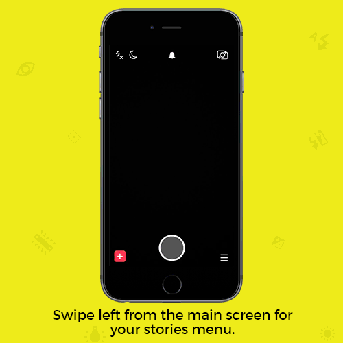

Serviços
Snaps
Tira uma fotografia ou um vídeo. Adiciona uma legenda, um desenho, um filtro, um sticker, uma lente ou um geofilter - o céu é o limite! Escolha a duração do tempo de visualização (até no máximo 10 segundos) e envia aos teus amigos!

Chat e vídeo chat
Comunica a qualquer hora e em qualquer lugar, através de mensagens de texto, de voz, imagens e variados stickers. Podes ainda fazer videoconferências. As mensagens são apagadas depois de lidas, mas não podes sempre gravar informações importantes.
História
Disponibiliza publicamente os teus snaps durante 24 horas adicionando-os à tua História!
Amigos
Só os teus amigos podem receber os teus snaps e falar contigo no chat! Adiciona-os através do seu número de telefone, nome de utilizador ou snapcode! Também podes pesquisar por utilizadores que se encontrem numa localização próxima e adicioná-los.
Em Directo
Acompanha em directo o que se passa num determinado evento ou localização através dos snaps enviados pelas pessoas presentes.
Discover
Mantém-te actualizado com as novidades dos teus canais de comunicação preferidos. Todos os dias saem novos conteúdos!
Geofilters
Os geofilters são o toque final que completa qualquer Snap. Procura-os em diferentes localizações e eventos. Também podes criar o teu próprio geofilter no site da aplicação para marcares um dia especial ou o teu negócio.